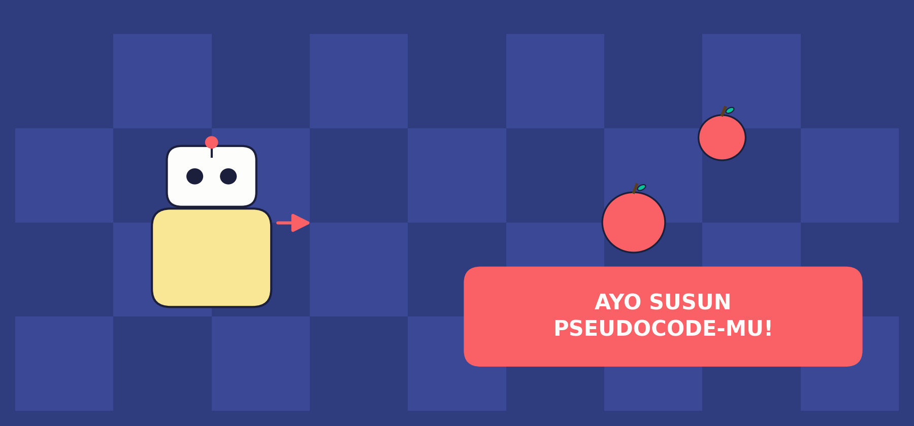
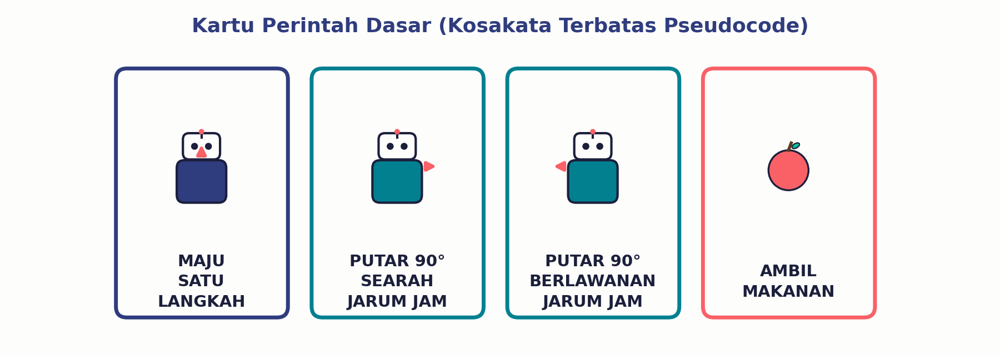
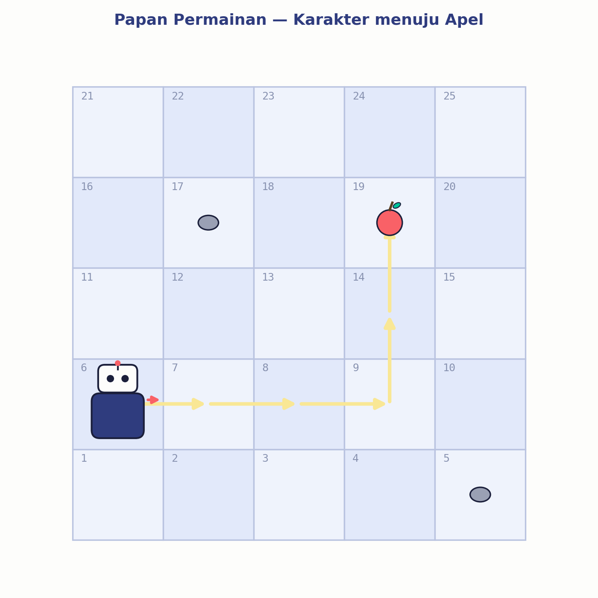
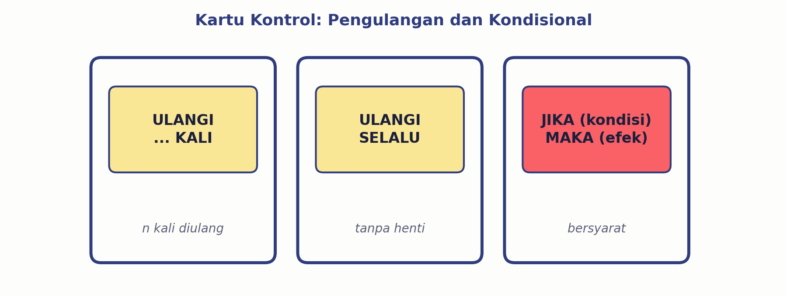
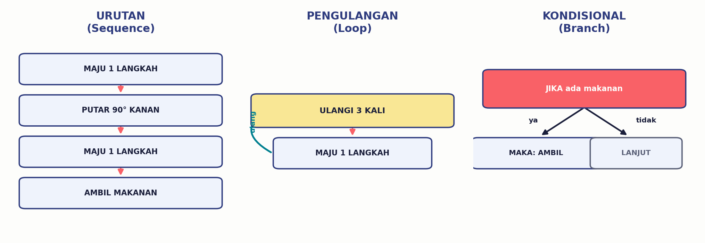

Belajar bareng RAKA — robot antar-buku sekolah yang cuma paham kosakata perintah terbatas. Siap bantu dia sampai ke tujuan tanpa nyasar?

Sebelum Mulai
Pernah nggak, kalian kasih arah jalan ke temanmu, terus dia malah nyasar? Padahal menurutmu udah jelas banget, kan? Nah, itu karena instruksi yang kita ucapkan pakai bahasa sehari-hari kadang bisa diartikan macam-macam alias ambigu.
Beda cerita kalau yang kita kasih instruksi itu komputer atau robot. Mereka nggak bisa nebak-nebak maksud kita. Makanya, dibutuhkan cara menulis instruksi yang singkat, jelas, dan pasti maksudnya — nah, itulah yang namanya pseudocode.
Pseudocode adalah kumpulan instruksi yang ditulis pakai kosakata atau simbol terbatas, disusun urut, buat menyelesaikan suatu masalah. Bukan bahasa pemrograman resmi (bukan Python, bukan Scratch) — tapi cara kita merancang langkah-langkah dulu.
Misi hari ini: RAKA baru "masuk kerja" di perpustakaan sekolah. Dia cuma paham kosakata perintah yang sangat terbatas. Tugas kita: belajar "bahasa" yang dipahami RAKA, supaya dia bisa jalan-jalan di papan permainan menuju target tanpa nyasar, nabrak, atau bingung.
Kosakata Terbatas
Cuma dengan 4 macam kartu ini aja, RAKA ternyata bisa berkeliling ke mana pun di papan permainan — asal urutannya benar!

Contoh Kasus
RAKA mulai dari kotak nomor 6, dan targetnya adalah apel di kotak nomor 19. Perhatikan jalur kuning berikut ini:

Kalau ditulis pakai pseudocode, jadinya seperti ini:
Instruksi MULAI dan SELESAI selalu ada di awal dan akhir. Di antara keduanya, semua instruksi ditulis urut dari atas ke bawah — ini yang disebut urutan (sequence).
Jurus Ke-2
Coba lihat lagi kode di atas — ada 3 baris "MAJU SATU LANGKAH" berturut-turut, kan? Kebayang nggak kalau RAKA harus maju 20 langkah? Makanya, ada kartu ULANGI.

Dengan ULANGI, tiga baris "MAJU SATU LANGKAH" tadi bisa diringkas jadi:
Lebih pendek, kan? Tapi hasilnya tetap sama persis.
Jurus Ke-3
Kadang-kadang, suatu tindakan cuma boleh dilakukan KALAU suatu keadaan terpenuhi. Contoh: RAKA cuma boleh "AMBIL MAKANAN" kalau memang di kotak itu ADA makanannya. Ini namanya kondisional, ditulis pakai kartu JIKA … MAKA …
Artinya: "Kalau syaratnya benar (ada makanan), baru jalankan perintah AMBIL MAKANAN. Kalau tidak, ya lewati aja, lanjut ke instruksi berikutnya."
Rangkuman Jurus

Instruksi dijalankan satu-satu, dari atas ke bawah.
Instruksi yang sama dijalankan berkali-kali (ULANGI).
Instruksi hanya dijalankan kalau syaratnya terpenuhi.
Yuk, Berlatih!
Kerjakan dulu di buku catatanmu, baru klik tombol untuk mencocokkan jawaban.
Tulis ulang pseudocode berikut dengan memakai kartu ULANGI supaya lebih ringkas:
RAKA berada di kotak start, menghadap ke kanan. Ada batu tepat di depannya (1 kotak), dan makanan ada 2 kotak setelah batu itu (RAKA harus muter menghindar). Susun pseudocode yang memuat: 1 kali putar, 2 langkah maju, dan 1 perintah ambil, memakai kondisional JIKA-MAKA untuk instruksi mengambil makanannya.
Catatan: jawaban bisa berbeda-beda tergantung rute yang dipilih, yang penting logikanya tetap benar dan RAKA sampai ke tujuan.
Menurutmu, apa yang akan terjadi kalau RAKA diberi pseudocode berikut ini? Ada yang aneh nggak? Kalau ada, perbaiki!
Cek Pemahamanmu
Kenapa pseudocode harus memakai kosakata yang terbatas, tidak boleh bebas seperti bahasa sehari-hari?
Apa bedanya kartu ULANGI … KALI dengan ULANGI SELALU?
Buatlah satu contoh situasi sehari-hari (selain robot) yang membutuhkan instruksi kondisional (JIKA … MAKA …)!
Rangkuman
Selamat! Kamu sudah paham dasar-dasar pseudocode. Lanjutkan dengan aktivitas kelompok di LKPD untuk latihan lebih banyak bareng teman-temanmu. 🎉